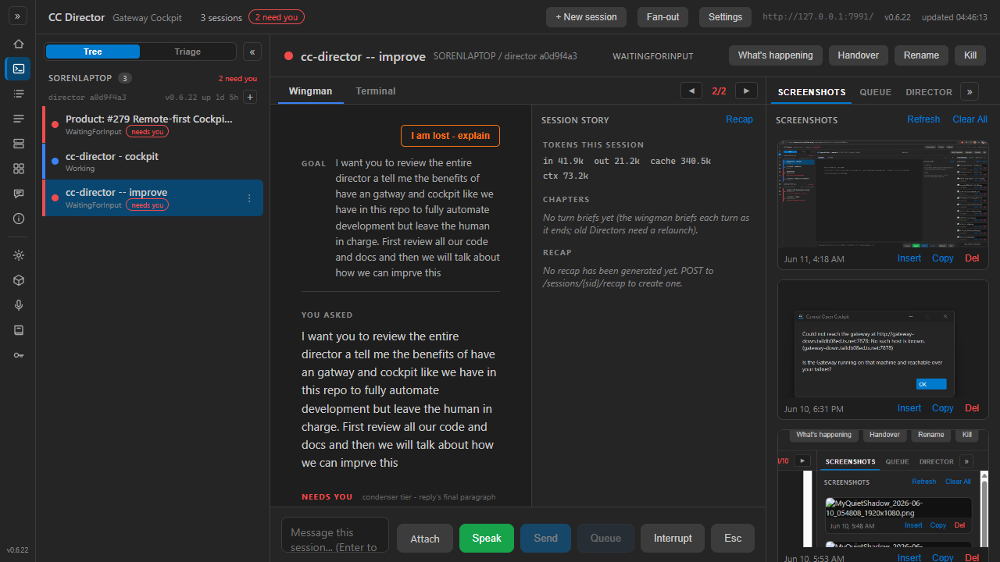
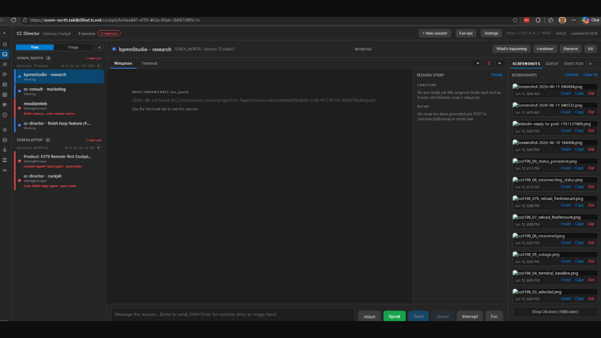

PR: #319 | Branch: issue-317-gateway-screenshot-proxy | Date: 2026-06-11 | Role: Developer Agent (CenCon)
| File | Change |
|---|---|
CcDirector.Gateway/Api/SessionWsProxyEndpoints.cs |
Third per-session leg: GET /sessions/{sid}/screenshots/file?name=... mapped through the
existing ProxyAsync (leg shot, Director path /screenshots/file) -
the SAME #268 resolution, not a fork. Plain HTTP forward via the shared YARP
IHttpForwarder; query carries through; open/resolved/close log lines per image
(open now also logs the query, i.e. the file name). |
CcDirector.Gateway.Contracts/CockpitShotUrls.cs new |
Pure static builder: Screenshot(gatewayOrigin, sid, fileName) →
{scheme}://{authority}/sessions/{sid}/screenshots/file?name={escaped}.
Scheme preserved (http→http, https→https), origin path/trailing slash dropped,
file name URL-escaped. Mirrors CockpitWsUrls. |
CcDirector.Cockpit/Components/Pages/Cockpit.razor |
ShotUrl now builds same-origin from Nav.BaseUri + the selected session's id.
All three byte sinks (thumbnail <img>, View, Copy) flow through it - one change covers them. |
CcDirector.Cockpit/Services/DirectorClient.cs |
The Director-direct ScreenshotUrl builder is REMOVED (so the broken browser-direct
pattern cannot be reused); GetScreenshotsAsync doc updated. List/Insert/Del paths unchanged
(server-side, already working). |
CcDirector.Cockpit/wwwroot/js/cockpit-shots.js |
Header comment only - the fetch/clipboard logic is untouched (AC5: no JS protocol change). |
docs/cencon/architecture_manifest.yaml |
SessionWsProxyEndpoints description now covers the third leg; CockpitShotUrls added to gateway_contracts. |
The Director's own /screenshots endpoints are unchanged (scope OUT respected).
| Criterion | Expected | Actual / proof | |
|---|---|---|---|
1. ShotUrl same-origin, never a Director address; unit-tested builder |
URL is {gateway-origin}/sessions/{sid}/screenshots/file?name=... |
Live DOM read of the rendered gallery: every img.shot-thumb src =
http://127.0.0.1:7991/sessions/2c4f42c5.../screenshots/file?name=Screenshot%202026-06-11%20041835.png
(7991 = the Gateway; the owning Director was 127.0.0.1:7880 and appears nowhere).
CockpitShotUrlsTests pin origin, sid path, escaped name, https→https, trailing-slash and
deep-link safety, port preservation, invalid input throws. |
PASS |
| 2. Gateway route returns bytes + correct content type; round-trip equals source | 200, image/png, byte-identical |
Live: GET /sessions/063e7a1a.../screenshots/file?name=Screenshot%20(4).png on the dev Gateway
returned 200 image/png, 303,363 bytes; cmp against the Director-direct fetch:
BYTES IDENTICAL. Unit: ScreenshotProxyRoundTripTests (self-hosted GatewayHost +
stub Director) asserts 200 + image/png + byte equality + the escaped name arriving decoded. |
PASS |
| 3. Unknown sid → 404; cached-owner-offline → 503 (reuse #268/#288/#291 resolution) | Same semantics as the WS legs, not forked | The route calls the SAME ProxyAsync/SessionOwnerCache path as stream/dictate.
Live: unknown sid returned 404. Unit: the screenshots leg was added to the existing
SessionWsProxyEndpointsTests theories - 404 unknown, 503 cached-owner-offline,
route precedence over the Cockpit fallback proxy. All pass. |
PASS |
| 4. Thumbnails render live; View opens full-size at the same-origin URL | Gallery shows actual images, not broken icons | Screenshot below: the gallery renders real thumbnails. Playwright DOM check: first five thumbs all
complete && naturalWidth > 0 (e.g. 1898x962). Clicking a thumbnail opened a new tab at
http://127.0.0.1:7991/sessions/.../screenshots/file?name=... titled file (1898x962)
(second screenshot). |
PASS |
| 5. Copy still works (same-origin fetch, no JS protocol change) | Copy puts the image on the clipboard | Live with clipboard permission granted: clicking Copy showed
"copied image to clipboard". A page-context fetch of the thumb src returned
{ok:true, status:200, type:"image/png", size:182527}. cockpit-shots.js logic unchanged. |
PASS |
| 6. Build clean; existing Gateway + Cockpit tests green | 0 warnings / 0 errors; suites pass | dotnet build cc-director.sln: Build succeeded, 0 Warning(s), 0 Error(s).
CcDirector.Gateway.Tests: 435 passed, 0 failed (includes the new tests).
CcDirector.Cockpit.Tests: 16 passed, 0 failed. |
PASS |
1. Dev Gateway from this branch: dotnet run --project src/CcDirector.Gateway -- --port 7991
(CC_GATEWAY_NO_TAILSCALE=1, CC_TURNBRIEFS=0, CC_COCKPIT_PORT=7470 - isolated from the
production Gateway and from Tailscale Serve; FSW-discovered the real local Director on
http://127.0.0.1:7880 with 3 live sessions and the machine's real screenshots folder)
2. Dev Cockpit from this branch: dotnet run --project src/CcDirector.Cockpit (port 7470,
Cockpit__GatewayUrl=http://127.0.0.1:7991/)
3. Playwright (headless Chromium) at http://127.0.0.1:7991/ -> Cockpit -> session ->
SCREENSHOTS tab. This reproduces the one-URL topology: browser only ever talks to 7991.
04:43:42.036 [SessionWsProxy] open leg=shot sid=063e7a1a-... query=?name=Screenshot%20(4).png client=127.0.0.1 04:43:42.044 [SessionWsProxy] leg=shot sid=063e7a1a-... resolved director=a0d9f4a3-... -> http://127.0.0.1:7880/screenshots/file 04:43:42.0xx [SessionWsProxy] close leg=shot sid=063e7a1a-... director=a0d9f4a3-... 04:43:54.534 [SessionWsProxy] open leg=shot sid=00000000-0000-0000-0000-000000000000 query=?name=a.png -> 404
Note the address pill top-right: http://127.0.0.1:7991/ (the Gateway). The SCREENSHOTS panel on the
right shows actual decoded images - the exact surface that rendered broken/black in the issue's report.


Architecture manifest updated in the same change (SessionWsProxyEndpoints now documents the third leg;
CockpitShotUrls added under gateway_contracts). No security-posture change: the new route sits behind the
same Gateway bearer/cookie auth middleware as every other route, and the same-origin <img> fetch now
carries the auth cookie automatically (the old Director-direct fetch relied on the Director's open CORS). No blocking
security rule touched.
No change to the Director's screenshots endpoints, no gallery UX change, no change to the Insert/Del/list paths. Cross-machine confirmation from a second tailnet box is post-merge deployment verification (supervisor-owned).